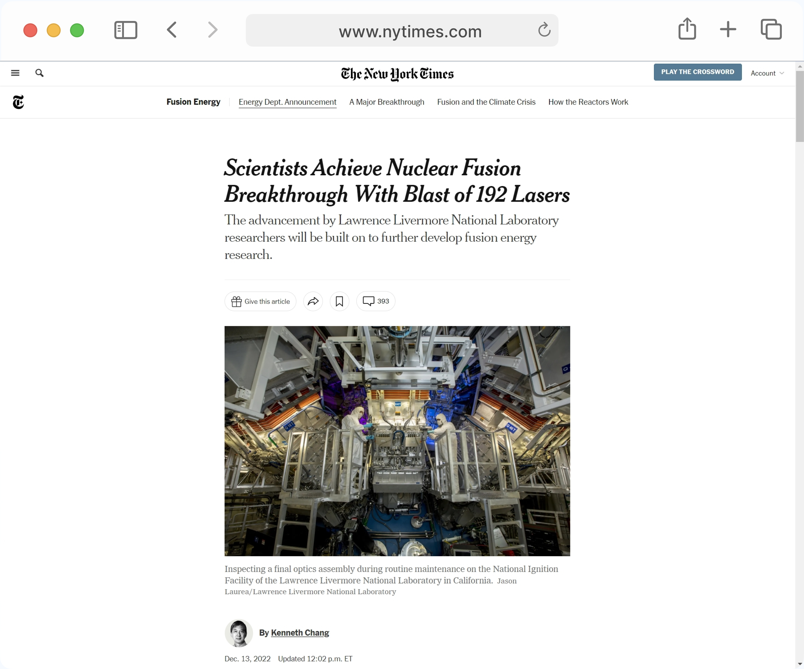
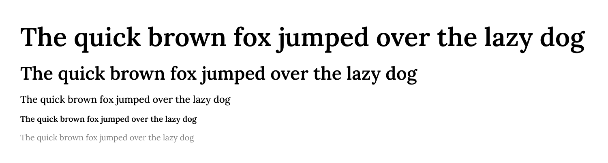
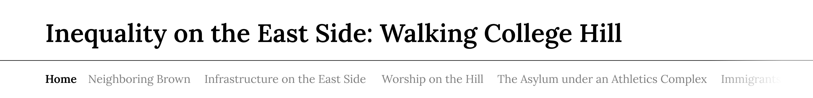
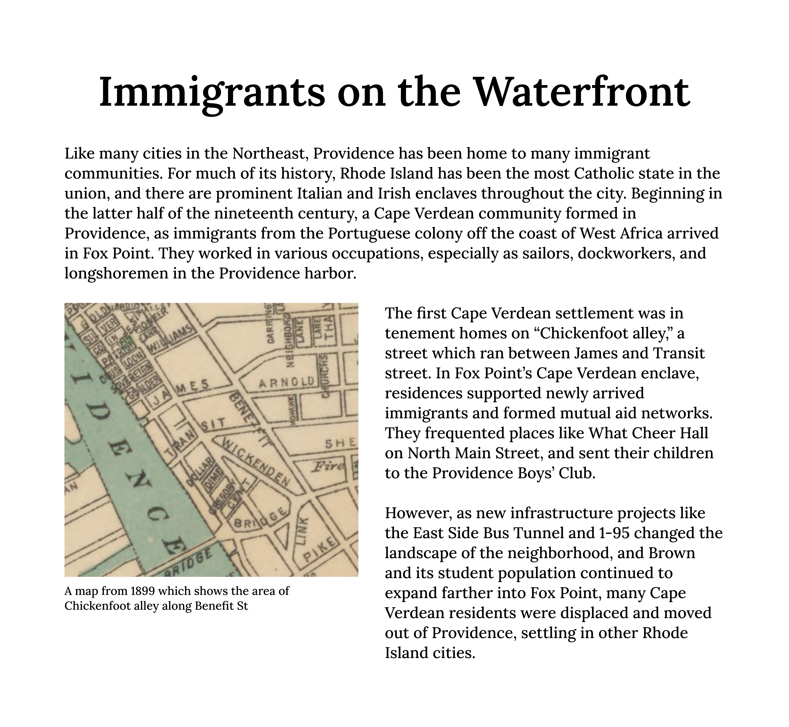
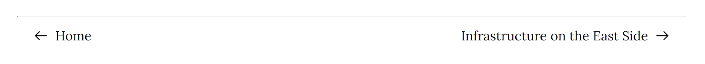

Inequality on the East Side
Overview
This was a history project aimed at contextualizing Brown's impact on Providence. I was brought on to the team to create a webpage to display the research. This was an exercise in designing something for a client rather than for my own purposes. It meant that my design decisions could not simply my personal preference but rather listening to the team and doing my best to implement their vision.
This was also the first website I designed that is primarily focused on the written content and photographs. This meant approaching the design in a different way than I am used to.
Research
Finding Comparable Websites
Because I had never designed a website primarily about reading its content, I did some research on websites that represent the industry standard in this domain.
I used the New York Times website as reference for how a website like this should be designed. They displayed text in a centered column in the middle of the page, with bolded titles, and large images to engage the reader.
I also decided that their top navigation bar that was used to jump between related articles would be perfect for jumping between the different sections of the "Inequality on the East Side" website.
Because the team behind the website had done archival research to find the old images we were going to display, I felt they needed to be shown more prominently than the sample I pulled up above.
Understanding the Audience
The ultimate use of the website will be as a reading assignment a newly designed class at Brown University. This means the audience is primarily composed of Brown University students who are looking to read its entirety. It should therefore be easy to navigate from article to the next, as they will all likely be read sequentially.
Design Iterations
Choosing a Font
Based on my research of comparable sites, it was important to choose a serif font to stay in line with the industry standard for news articles. I didn't want to simply use Times New Roman, however, because I wanted to site to have a more personal and hand-crafted feel.
I chose the Lora font because I felt it met the requirements perfectly and everyone the team agreed. I also laid out the different font sizes and weights I'd be using. I wanted to use a fairly large difference between my large title sizes and regular text sizes to a sense of dynamism and importance to the design.
The Top Navigation Bar
Based on the effectiveness of the New York Times top navigation bar, I wanted to create something similar for this site. Unfortunately I ran into the problem of having too many top navigation items, and they would go off screen or break the layout. To fix this issue I had the top bar be horizontally scrollable.
This horizontally scrolling nav bar created a new problem where users might not know that the bar could scroll at all, making them miss a ton of content. To fix this issue, I created several affordances that communicated to the user that it was capable of scrolling.
The first was a gradient to white on the edges rather than a sharp cut off of the nav bar. This resulted in drawing the users eye to the edge of the screen where text seems to fade out of view. Based on prior experience with webpages, this communicates to the user that there is addition content being hidden, and naturally makes them scroll horizontally.
The next affordance I added was a scrolling animation when clicking a nav item. Critically this shows that the nav bar is capable of movement and briefly makes the scroll bar itself visible informing the user of its scrolling capabilties.
The Article Layout
Once again mimicking the New York Times, I created a central column for the text once the screen size was large enough. I wanted to include images with captions as well, so I split the text column in two when those were available. I thought added a nice visual contrast rather than adding them inline with the text.
Bottom Navigation
Based on the audience research I conducted at the beginning of the project, I knew it was important to add multiple navigation tools for sequentially navigating the site.
My final result was a bottom nav bar at the end of the text that allowed for easy clicking between the next and previous articles. I made sure that this also animated the top navigation bar to remind the user that there were multiple ways to navigate the site.
Final Design
Combining all these elements I arrived at the final design for the website. Interact with it here.

Conclusion
Key Takeaways
This project helped me understand the nuance of working in a team where the vision for the project was not my own. Instead I was working to put someone else's vision onto the screen. This meant thoroughly going through the design with the team and making sure I hit all the important points and communicated the information in a way that was clear and desirable.
This project also represented a different type of website of design than something I had previously worked on before. This meant I gained experience researching similar designs and picking out aspects I liked to implement.